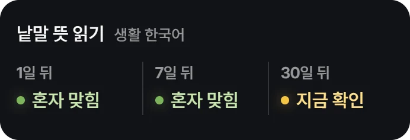
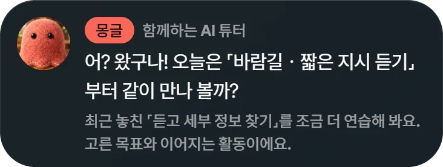
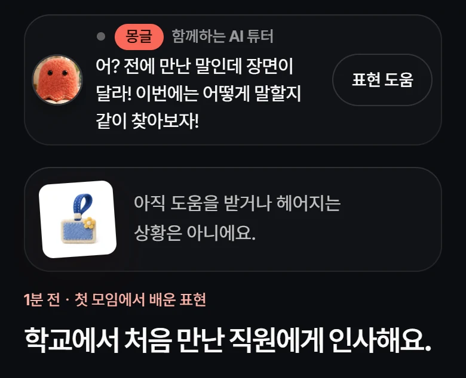
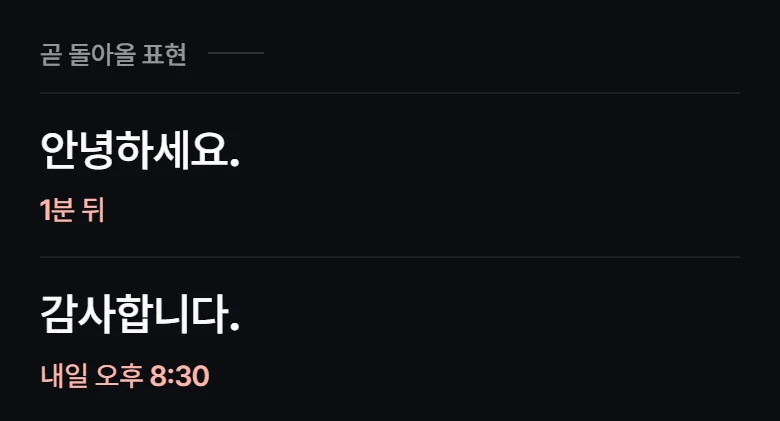
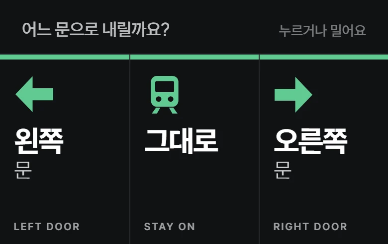
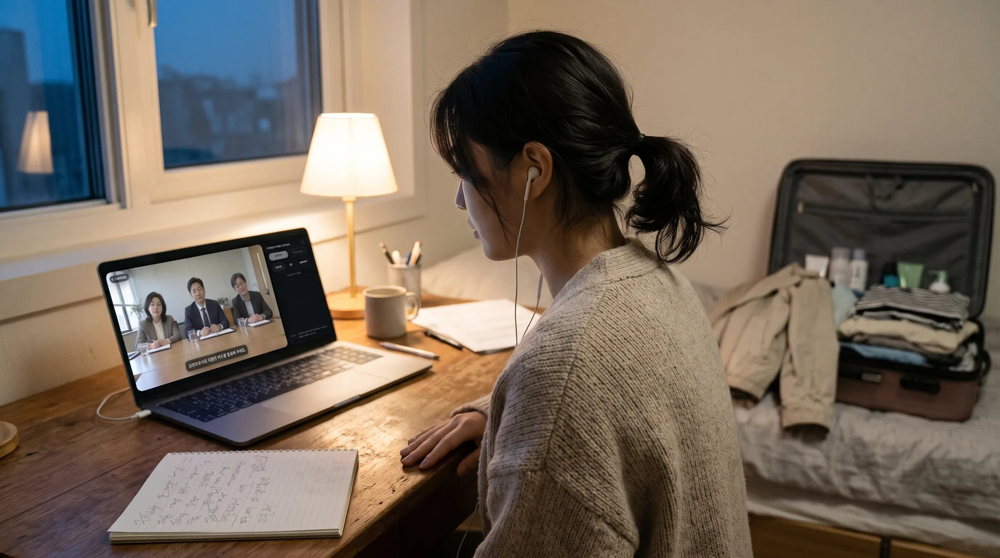

사람마다 막히는 곳이 다릅니다 그 한 곳부터 풀어 주는 AI를 만듭니다
한국어 교육에서 시작했습니다. 둘러보기

한 사람이 실제로 해 본 것을 읽고 다음 할 일을 고르는 엔진, 아틀라스를 만듭니다
SYNK는 지금 한국어 교육, 회사의 AI 수업, 광고 제작, 한국 유학 준비 네 곳에서 일합니다.





ATLAS
틀린 말은 1분 뒤에, 맞힌 말은 잊을 때쯤 돌아옵니다
오늘 뭐 하지?
목록 대신 하나만 권합니다. 오늘 남긴 기록이 내일 튜터의 첫마디를 바꿉니다.
실제 SYNK WORLD 화면예시 학습자의 30일
SYNK LAB
말해야 다음 장면이 열리는 한국어
K드라마 속 유학생이 되어, 한국어로 대답합니다. 상대가 먼저 말을 걸고, 소리 내어 대답해야 다음 장면이 열립니다.
지금 SYNK WORLD — TOPIK 연습과 한국어 게임
K드라마 상황극 1화 「개강 첫날」학생 식당에서 반갑게 손을 드는 태오 선배

SYNK PATH
한국에 오기 전에, 먼저 해 봅니다
처음 마주할 면접을 미리 치러 보고, 서울에서 보낼 하루를 미리 짜 봅니다. 유학과 일자리 준비는 차례로 엽니다.
지금 면접 연습과 서울 하루(무료)
PATH 보기내 방에서 먼저면접관 세 명의 첫 질문을 먼저 들어 봅니다
서울 지금--:--
- 잘된 공개 콘텐츠 조사매일
- 회사 서버 · DB 암호화 백업매일
- 오늘 올릴 영상 제작매일 두 번
- 올린 게시물 성과 점검화 · 금
- 미디어 원본 백업매일
- 오늘 SNS 게시물 자체 검수 → 모든 계정에 게시매일
- 오늘 올릴 영상 제작매일 두 번
- 내일 만들 주제 찾기매일
- 스레드 게시매일
30개 넘는 일이 사람 없이 제시간에 돕니다.
SYNK PULSE
카메라 앞에서 10년, 배우가 AI 모델을 연출합니다
시선, 제품을 쥔 손, 웃음이 나오는 타이밍까지 직접 연출합니다. 상담은 제품 사진 한 장과 올릴 곳만으로 시작합니다.
지금 AI 모델 스물한 명 캐스팅북과 광고 의뢰
PULSE 보기쇼릴 12초도담중공업 · 오미톡 · 매진 임박 · 모두의코스
무엇이든 물어보세요
공개된 내용은 여기서 바로 답합니다. 상담과 제안은 메일로 받습니다.
대화는 저장하지 않습니다. 개인정보는 적지 말아 주세요.
hello@synk.im웹 문의 양식 ↗
최근에 새로 연 것
- 2026.11.16플랫폼PC 앱 Preview 0.4.95
- 2026.11.05LABSYNK WORLD에 새 놀이 셋을 열었습니다
- 2026.11.03PULSE아이돌 두 팀 여덟 명이 합류했습니다
지키는 것 셋
- 나이로 짐작하지 않습니다
나이 · 성별 · 국적으로 넘겨짚지 않습니다. 본인이 고른 것과 실제로 해 본 것만 봅니다.
- 내가 한 것과 AI의 짐작을 섞지 않습니다
직접 쓴 답과 한 행동은 그대로 두고, AI가 짐작한 것은 따로 표시합니다. 틀렸으면 본인이 고칩니다.
- 되는 것만 된다고 말합니다
지금 되는 것과 준비하는 것을 나눠 적습니다. 재 보지 않은 효과는 말하지 않습니다.